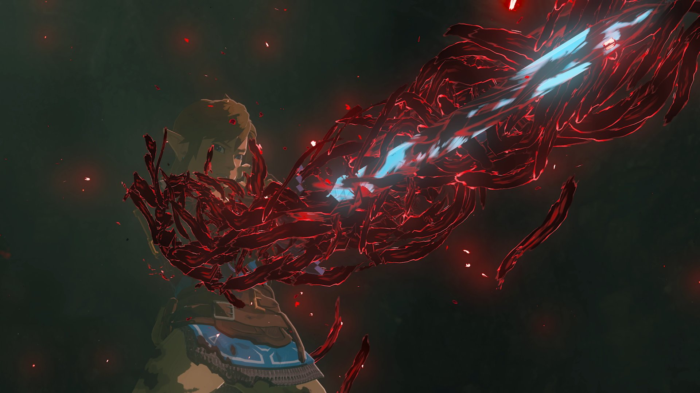
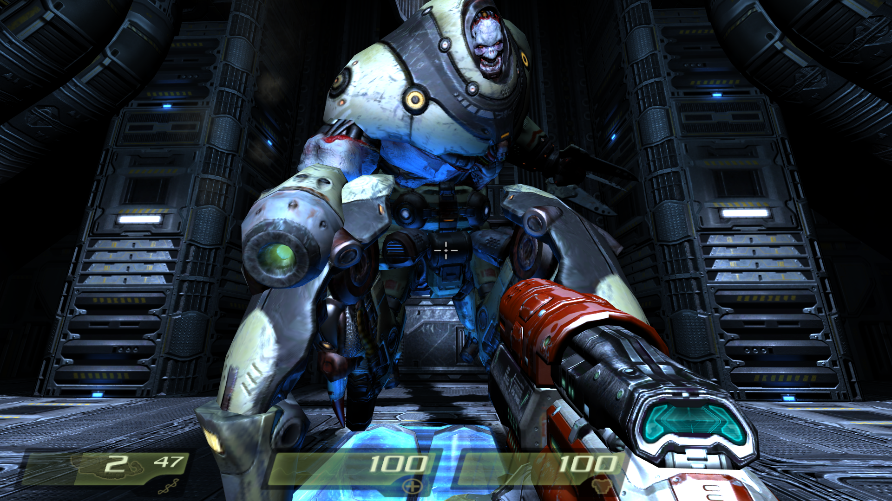
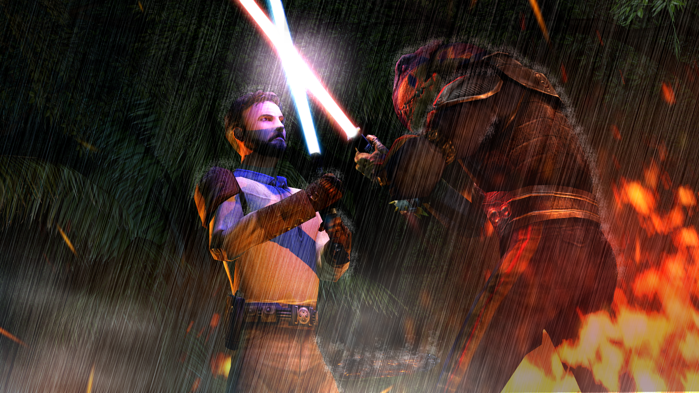

For those who aren’t following the increasingly unhinged ravings of my countdown bot on Mastodon, The Legend of Zelda: Tears of the Kingdom is coming out on Friday, May 12.
And for those who’ve only heard in passing–or who have perhaps never heard–of the Zelda video game franchise: its latest installment is coming out this Friday, May 12, and the Zelda community is absolutely giddy with anticipation.
I could wax historical over its 35 years and 20 different games spanning nearly a dozen (more than a dozen?!) different Nintendo consoles; I could swoon over its cultural impact, influencing other genres and changing, perhaps even unknowingly to many people, how game and puzzle creators approach their design; I could go on about the record-shattering success of its predecessor from 2017, Breath of the Wild, and how this is only the second time in the history of the franchise that Nintendo has made a direct sequel to a previous game; and I could blather on for.ev.er. on the established Zelda lore and all the branching theories that its rich storytelling has spawned.
But instead of doing any of that, I just want to put forward one small hope for the game: I really hope that the game opens with a playable Link getting the absolute snot beat out of him by Ganondorf.
Personally guide Link to his near-demise
From the trailers, we know the game starts with our eponymous heroes stumbling upon Ganondorf, and something happens where they get separated, Link is grievously injured, and the Master Sword is damaged; here’s the part of the latest trailer where it happens.
Here’s the relevant screenshot of it happening:

It’s horrifying on multiple fronts. We know it happens sometime near the very beginning of the game (setting the stage for the whole thing), and we also know—one small tidbit of Zelda lore—that it should not be in any way possible for the Master Sword to be damaged by evil. It just shouldn’t. So the fact that it is, is truly terrifying on its own.
But here’s where I’m hoping the game takes it up one more notch: I’m hoping that part at the beginning, where the questing heroes find Ganondorf and get their asses kicked, is fully playable.
There’s precedent for this, in fact it’s happened in at least a few games I’ve played, going back almost 20 years!
Quake 4 (2005)
You play the part of a space marine from Earth tasked with helping push back an alien invasion. For most of the first part of the game, you’re working with your unit to sabotage one of the main “conduits” of the alien military that allows them to communicate and coordinate with each other. You’re eventually successful, but right after, a big bad thought killed in Quake 2 suddenly appears—very clearly alive—and you have to fight him.
You lose. You’re guaranteed to lose. But you still have to fight him. Not only that, but you have to stay alive just long enough to see how every strategy you’ve deployed up until this point fails in spectacular fashion. You can’t even dent the guy’s armor.
Of course, what follows is a long cutscene involving a partial assimilation… it’s a neat sequence, but it requires a bit of a, uh, “constitution” for gore.

Jedi Outcast (2003)
You play the role of Kyle Katarn, a mercenary-turned-jedi-turned-mercenary-again. In the pre-sequel-trilogy world, he’s actually the guy who stole the Death Star plans and got them to the Rebellion (Dark Forces). In the next game (Dark Forces II: Jedi Knight), Kyle discovers he’s force-sensitive and trains to become a Jedi. In doing so, he brushes so close to the dark side that he instead chooses to cut himself off from the Force entirely.
That’s where 2003’s Jedi Outcast picks up: he’s back to being a mercenary. One of his missions puts him in an Imperial research lab that appears to be trying to infuse objects with Force energy (think Force batteries). At the end of the mission, he runs headfirst into the Dark Jedi masterminding the whole thing, Desann.
Desann promptly takes his partner hostage, and when Kyle threatens him with a blaster, Desann fires up his lightsaber and dares Kyle to take his partner back. That cues up a fully-playable fight.
I mean, Kyle is a tried-and-true mercenary and at this point in the game has a pretty decent arsenal, too. But the fight is an absolute joke. Energy weapons? Desann just deflects with his lightsaber. Projectile weapons? He Force Pushes backwards and away from him. And explosives? He levitates back towards you. I don’t think it’s actually possible to land a single hit, but you still have to try, just so you can see how woefully inadequate you are when you bring a blaster to a fight with a fully-trained Dark Jedi.

All I ask
That’s what I’m hoping for from Tears of the Kingdom: a chance to bring everything we stocked up from Breath of the Wild to the opening fight against Ganondorf, and to lose badly in spite of it all, driving home just how much badder this baddie is than the one we faced at the end of the previous game.
It’s hard to oversell just how overpowered Link was by the very end of Breath of the Wild (assuming your play style leans more toward Completionist than Speedrunner, of course); bringing all that might to bear as Tears of the Kingdom kicks off and seeing it just break like waves on the surf would be one hell of an opener.
It’d also be a cool bonus if our last completed Breath of the Wild game slotted into a new Tears of the Kingdom game so we started with exactly the same equipment, but I’m not married to that one.
Oh, and
Speaking just for myself: Breath of the Wild was a singularly amazing game, reminding me how much I love to explore and create just for the sake of exploring and creating (not just in video games, either). At the end of the day, I truly don’t care if the opening fight is playable or not. If the Nintendo team can bring that same wonder, that same reward for simple curiosity—kicking over that last rock just for the sake of seeing what’s underneath—then I’ll happily sink another [REDACTED] hours into it.
THREE. MORE. DAYS.
Citation
@online{quinn2023,
author = {Quinn, Shannon},
title = {My Thoughts Ahead of {\_Tears} of the {Kingdom\_}},
date = {2023-05-09},
url = {https://magsol.github.io/2023-05-09-thoughts-ahead-of-totk},
langid = {en}
}